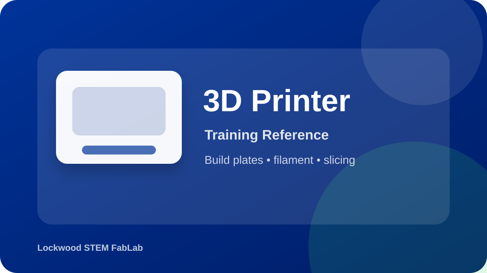

Learn the complete student workflow for using the Bambu Lab P1S: prepare the model, slice responsibly, check the first layer, and clean up after the print.
Open official product/source page
This page prepares you for the hands-on check. Passing the quiz does not replace the instructor sign-off.
| Step | Bambu Studio | RoboPrint | Student Check |
|---|---|---|---|
| Import Model | Open STL/3MF and confirm scale/orientation. | Load model into RoboPrint workspace. | Part is the correct size and sits correctly on the build plate. |
| Select Printer/Profile | Choose the correct Bambu printer, plate, and filament profile. | Choose the correct Robo printer/profile. | Profile matches the machine and material being used. |
| Adjust Settings | Layer height, infill, supports, wall count, brim/adhesion. | Comparable quality, support, and material settings. | Settings match the goal: strength, quality, speed, or material savings. |
| Preview | Use sliced preview to check layers, supports, time, and material. | Review generated print preview/toolpath. | No floating parts, unreasonable supports, or obvious failure risks. |
Use these visuals to connect the training steps to what you will see in the FabLab.
Use this image to identify the correct tool, major features, and safe handling areas before your hands-on check.
Confirm the workspace is clear, required PPE is ready, and the tool is set up exactly as directed.
Inspect the work, clean the area, and report anything unusual before leaving the station.
Use this to review importing, orienting, slicing, and preparing a print before submitting a job.
Open video on YouTubeUse this to preview the P1S hardware, loading, and first-print workflow before hands-on training.
Open video on YouTubeWhy should you preview the sliced file before printing?
What should you do if the first layer begins peeling up?
Use these visual references to identify the equipment and review the workflow before using the tool.
Equipment overview
Setup checkpoint
Safe cleanup
Use these videos as support before your hands-on classroom demonstration. Your teacher’s directions and FabLab safety rules always come first.